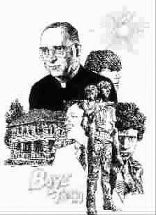

男孩城
●袁劲梅
“男孩城”的意思其实是“孤儿城”。它是美国历史上最早，也是最著名的一座孤儿收容所，一直只收男孩。1979年改了名字，叫“男孩女孩城”，也收女孩了。但习惯上，我们仍叫它“男孩城”。
男孩城有一部动人的家史。男孩城里的故事大大小小，每一个都很动人，可以写出一本书来。在这里，我只讲它最早的一个和最新的一个。我讲出来的其实是一块“压缩饼干”，但这里蕴藏着男孩城由始至今、一以贯之的精神。
男孩城始于神父福拉乃甘的“男孩之家”。1917年，第一次世界大战在欧洲造成惨重伤亡。这让远离欧洲主战场的美国人很紧张。接着，美国也参战了，许多小镇上的美国人参了军，其中一部分离开了家园就再也没有回来。在内不拉斯加州的奥玛哈城，有一位年轻的爱尔兰籍神父福拉乃甘，预计到长期战乱将会给美国人带来的灾难之一就是无家可归的孤儿问题，他在美国刚参战时就指出了流浪儿会随战争延长而增加。果然，在小镇众多的美国中西部，流浪儿很快成为了一个战争并发症。人们不知道该拿这些以偷窃为生、到处闯祸、无人管教的流浪儿怎么办。
1917年12月12日，世界大战在一百多处疯狂展开。与此同时，福拉乃甘神父敞开他家的大门，让6个流浪儿住了进来。这6个男孩想要一个可以让他们过圣诞节的家。“男孩城”的故事就从这天开始了。
福拉乃甘神父有一句名言：“没有坏孩子，只有坏环境、坏教育、坏榜样和坏想法。”本着这种信念，福拉乃甘神父决定帮助更多的流浪儿。他到处找房子和资助，他找了一间大点儿的房子，又从一个犹太珠宝商朋友那里募捐到90块钱，付了第一个月的房租。他让6个孩子都搬进了这所维多利亚风格的大宅子。他让这个大宅子的门日夜开着，每个流浪儿都可以进来找一分温暖。到圣诞节来临的时候，这个被称作“福拉乃甘神父家”的大宅子里，住进了25个男孩。但是，福拉乃甘神父再也没有钱给这些流浪儿准备圣诞晚餐了。25 个男孩，大大小小，待在“福拉乃甘神父家”盼望着福拉乃甘神父给他们变出食物来。就在这时候，一个奥玛哈的商人给福拉乃甘神父送来了一桶德国泡菜。这桶泡菜就成了25个孩子和福拉乃甘神父的圣诞正餐。
到了次年1月，福拉乃甘神父家的流浪儿增加到了50个。福拉乃甘神父想到的是：不仅要给他们找食物和温暖的地方睡觉，还要解决他们的教育问题。福拉乃甘神父想送他们去上学，想把孩子培养成能被社会接受的公民。有一个公立学校收了福拉乃甘神父的孩子，但是不久，福拉乃甘神父的孩子们被退回来了。学校里的其他孩子不喜欢他们，叫他们“贼”“捡破烂的”“没娘管的”。福拉乃甘神父的孩子就和学校的孩子打架。
这些流浪儿在公立学校受到了歧视。社会把战争带来的恶果转嫁给了这些本来已经很不幸的孩子。福拉乃甘神父决定自己成立一所学校，在这所学校里，什么样的歧视都不准存在。这样，在1918年夏天，在周围小镇人的捐款和支持下，福拉乃甘神父成立了两所学校，一所是三年级到八年级孩子上的学校，叫“惟格烈学校”，另一所叫“男孩城高中”。在福拉乃甘神父自己的学校里，男孩子们学文化，搞体育，建合唱团，掌握生存技能。他们像其他孩子一样上学放学，唯一不同的是，福拉乃甘神父的学校有严格的纪律。用男孩子自己的话说：这里的纪律训练就是要你自己和自己过不去。几年以后，男孩城高中有了自己的第一批高中毕业生。福拉乃甘神父说：“年轻人犯错误，可以比作一棵植物被种进了阴湿的盐碱地，因为得不到阳光，它的健康被损坏了。它没有得到好好成长的机会。”而福拉乃甘神父的学校就是要还给这棵植物阳光和养料，让它好好成长。
男孩子们在成长，男孩城也在成长。1922年，福拉乃甘神父得到捐款，买下了160多英亩的土地，1936年，男孩城成了官方承认的一个独立村。两部关于男孩城的电影相继问世，其中一部电影中的男主角(饰福拉乃甘神父)崔西获得1938年的奥斯卡最佳男主角奖。崔西把奥斯卡奖捐给了男孩城。后来，在二次大战中，福拉乃甘神父到日本和亚洲战场去宣传他的人道主义，又收养了许多不同国家的战争孤儿，其中一些来自亚洲战场。福拉乃甘神父于1948年去世，他留下的遗言是：“……这个工作将会继续下去，你将看到，不管我在那里还是不在那里，它都会继续。因为，这不是我的工作，是上帝的工作。”
现在，男孩城已经发展成了“男孩女孩城”，许多无家可归的女孩子也在这里找到了她们的家。1983年，第一批女孩子从福拉乃甘神父创立的高中毕业，一共5个人。她们手拿男孩城第一届女毕业生的照片拍了一张意味深长的毕业照。
我在“男孩女孩城”听到的最新故事是一个有关领养伊拉克战争孤儿的故事。这个伊拉克孤儿是个十多岁的男孩儿。他在巴格达机场的战火里乱跑，差点被打死，后来他跑到了美军阵地，在那里待了一些日子，就被美国士兵送到了“男孩女孩城”。美国的电视新闻也报道过这个故事。
这个故事其实是一个黑色幽默。美军把这个孩子的家园给摧毁了，然后，把这个孩子送到自己的后花园来了。“男孩女孩城”从一开始成立，就在为一个悲惨世界做着亡羊补牢的工作。黑格尔说：“恶”是历史的驱动力。那么，“善”大概便是开在历史路径旁边的棠棣之花，她不能阻止“恶”，只能让“恶”汗颜。
当人们在世界的其他地方发动战争，追逐权力，积累金钱，巩固地位的时候，“男孩女孩城”在关心着孩子。福拉乃甘神父和他的后继者们在这里给孩子们保留了一块可以数星星的庭院。迄今，已有1800名男孩女孩在“男孩女孩城”里长大成人，他们的小城也已扩大成了一座有900英亩土地的花园城。走进“男孩女孩城”就像走进了一所宁静雅致的校园，有新建的教学楼、图书馆、历史博物馆、植物园，还有一片安静的天鹅湖。福拉乃甘神父收容孩子们的第一所房子和他建的教堂，像两粒饱满的种子，一粒饱含着“爱”，一粒饱含着“善”，依然如故地立在“男孩女孩城”的中心。
(党娜摘自《美文》2006年10月上半月刊，戴晓明图)